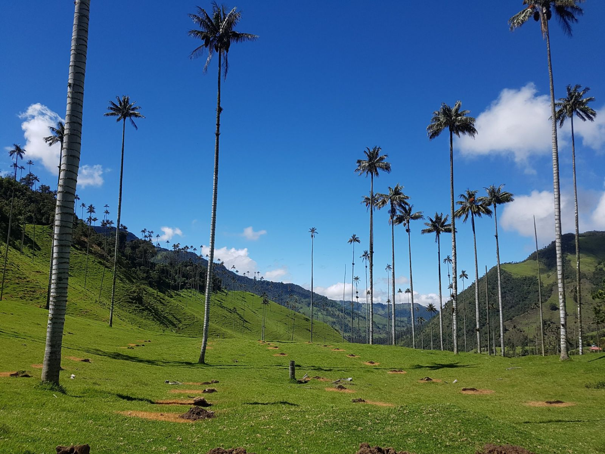
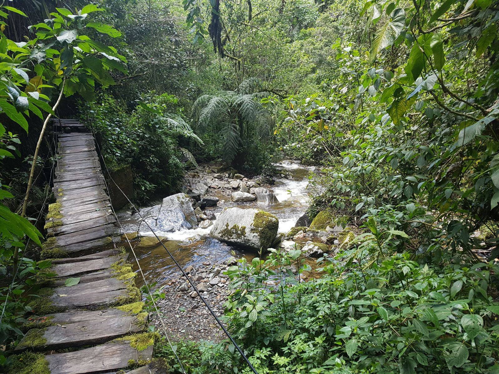
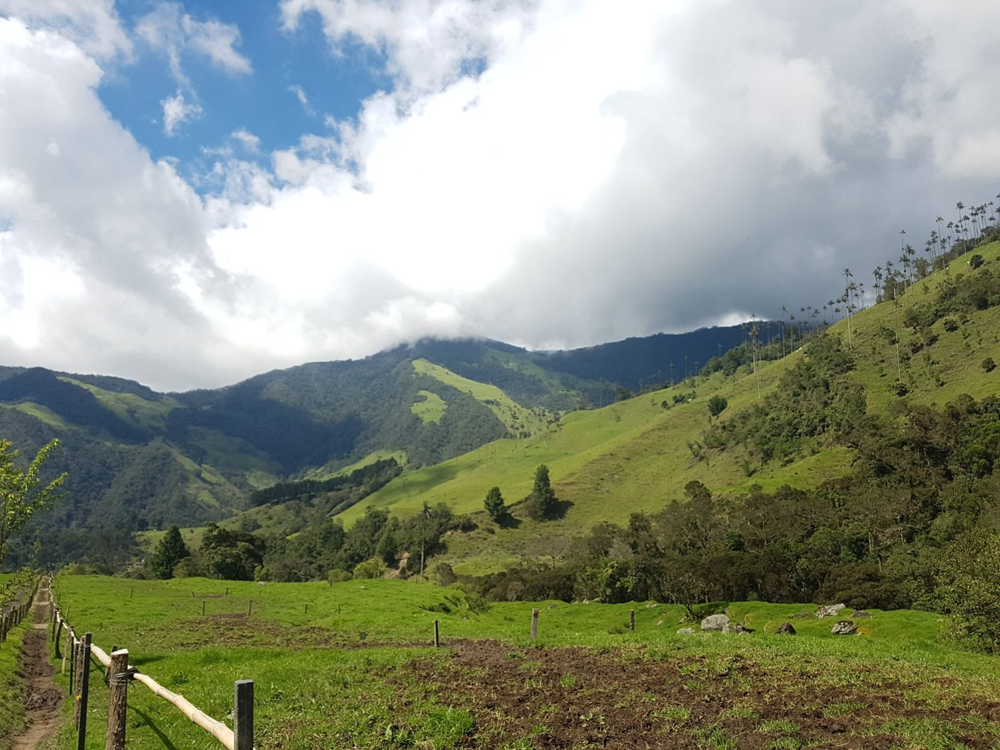

Colombia · Quindío · Cocora Valley
Cocora Valley in 2026: what to check before you go, and what the walk was like
I walked in the Cocora Valley on December 13, 2017, from the town of Salento. That was nine years ago, so this is partly what I remember and photographed, and partly what I checked again in November 2026. The checked facts are marked with a source and a date. I did not find an official page with the fees and hours, so every figure below comes from private travel sites and guides, and the sources disagree with each other in several places. I say where.
The walk
The Cocora Valley is a long valley of grass hills and forest a short ride from Salento, known for its wax palms, which are extremely tall. I did not note how I got there, which trail I took or whether I used a jeep, and I do not remember what I paid. I took 13 photos that day. The first two are from 10:02 and 10:25, and then I have none until 12:58, so I do not know what I did in between. The times are my phone's clock, which Google Photos stores in Colombian time (GMT-5).

In the afternoon the path went through forest and across several plank suspension bridges over a mountain stream. The planks were old and, in one photo, covered with moss, and the stream below was fast and white.

After the bridges the path came out above the valley and ran along fences between steep green slopes, with palms along the ridge. The last photo of the day, at 14:00, shows a stream with a log across it. I do not know whether that was the end of the walk.

What to check before you go (November 2026)
- Getting there. Shared Willys jeeps leave from the main plaza of Salento, the Plaza de Bolívar, and take about 30 minutes (bucketlistly.blog, updated October 24, 2026; cocoravalleytour.com, marked as updated November 5, 2026). The same page says the valley is about 11 km from the village.
- The jeep fare. The October 2026 update gives 5,000 to 6,000 pesos each way. A guide published on June 12, 2026 and updated on July 24, 2026 says about 12,000 for the return trip in May 2026 and 5,000 to 7,000 one way in other 2026 reports, and gives 25,000 to 35,000 pesos for a taxi each way (frugalvoyage.com). A third site gives 3,600 to 5,900 one way (cocoravalley.org, no date, copyright 2026).
- When the jeeps run. The October 2026 update says the first jeep leaves around 6:30 and quotes a reader who says 6:10, and that departures follow demand, not a fixed timetable. The July 2026 guide says the first ones leave between 6:30 and 7:30 and that local reports put the last shared return at about 5:30 to 6:00 in the evening. The cocoravalley.org page says the last one back leaves between 6:00 and 6:30 and advises being back at the parking area by 16:00. Confirm the last jeep the same day.
- The fees. They disagree. The October 2026 update says the full loop costs about 52,000 pesos with the return jeep, or about 72,000 with a visit to the Acaime hummingbird reserve, with trail fees collected along the way. The July 2026 guide lists 10,000 at Finca El Portón and 30,000 at Finca La Esperanza and Bosque de Palmas, and 20,000 for Acaime. The cocoravalley.org page lists a 20,000 entrance for the main palm area, 6,000 to 10,000 more for private land on the full circuit and 5,000 for Acaime. The cocoravalleytour.com page also lists a 20,000 conservation fee. The October 2026 update says the Acaime fee was 5,000 on the author's earlier visit and about 20,000 now, usually with a hot drink.
- Cash. Bring cash. The October 2026 update says at least 100,000 pesos, and the July 2026 guide says 100,000 to 120,000 per person and no useful cash machine at the trailhead.
- Opening hours. The cocoravalley.org page says 7:00 to 18:00 every day. The cocoravalleytour.com page says 8:00 to 18:00 and recommends arriving between 8:00 and 10:00 to avoid afternoon fog and rain. A reader comment under the October 2026 update, undated, says the park opens at 8:00.
- The loop. The October 2026 update gives 12 to 15 km and 5 to 6 hours, longer with Acaime or photo stops. The July 2026 guide gives 12 to 13 km, 5 to 7 hours and 600 to 760 metres of climbing, with the Acaime detour adding about 4 km and 2 hours, and a short palm route of 1 to 3 km. The October 2026 update recommends walking the loop counterclockwise, through the river and cloud forest to Acaime first, then up to Finca La Montaña and down through the palm valley.
- Altitude. The July 2026 guide puts the palm areas at about 2,300 to 2,660 metres and the highest point of the standard loop, Finca La Montaña, at about 2,860. It says to walk slowly on the first climb, drink water and turn back if you feel dizzy or unwell.
- Weather and mud. The October 2026 update says there is no truly dry season, that December to February and July to August are the drier months, and that the trail can be very muddy. The July 2026 guide says April, May, October and November are usually wetter, that the pasture near the start can be deeply muddy, and that wet rocks and steep switchbacks make the loop much harder after rain. Both say to bring a rain jacket and go early.
- The bridges. The cocoravalley.org page says there are eight suspended wooden bridges that you cross one person at a time. The July 2026 guide says to cross one at a time too, and says markings and bridges can change, so carry an offline map.
- Private land. The October 2026 update says much of the valley is private farmland, so stay on the marked trails.
What I could not check
I found no official page for the fees, the hours or the jeep timetable, so I cannot tell you which of the figures above is right. I found no 2026 report on the state of the bridges or the trail after rain, and I did not check closures of the Los Nevados National Natural Park, which the longer routes above the valley lead into. The July 2026 guide says those routes need separate permits and a registered operator. I did not check any travel advisory for the area. Confirm the jeep, the fees and the weather in Salento's main plaza on the same morning.
What I would pass on
I took photos, not notes, so I cannot give you my own tips for the trail. The practical points that the sources agree on are these: go early, bring cash and a rain jacket, and ask about the last jeep back before you start.
The full chapter, with the day before among the coffee farms and all of the photos of the walk, is in Members.